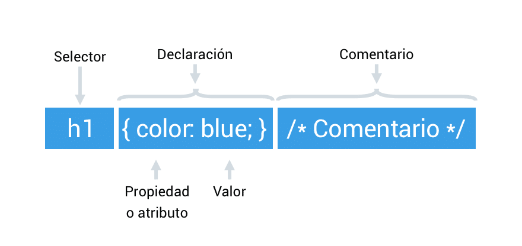
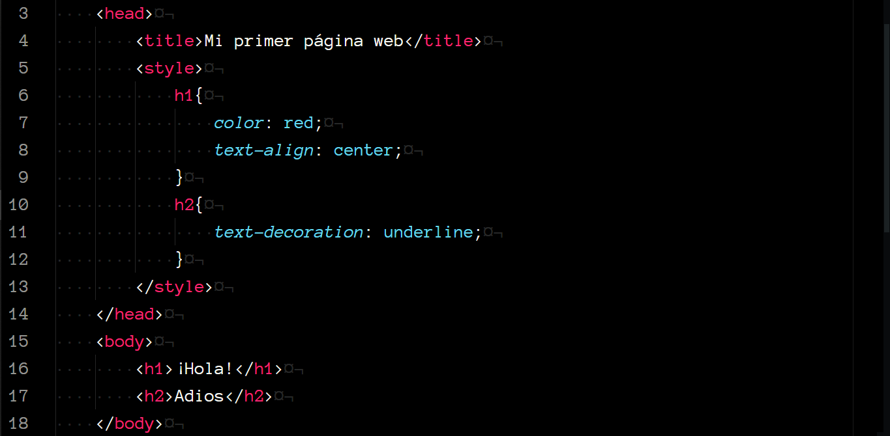

Introducción
CSS es un lenguaje que se centra en el diseño y la presentación de una página web; permite alterar la apariencia de los elementos
HTML y controlar aspectos como el color, los márgenes, el tipo de letra, el diseño y otros aspectos visuales que son clave para la
experiencia del usuario dentro del sitio web.
Como te permite separar la presentación del contenido, puedes mantener un diseño coherente en todo tu sitio web de manera más sencilla,
creando diseños atractivos y gestioinando los cambios visuales rápidamente.
Propiedades comunes
Empecemos por observar la sintaxis de selector:

En la siguiente tabla, se muestran los selectores básicos con su respectiva descripción. Ten en cuenta los caracteres especiales que usan algunos.
Selectores básicos
| Selector |
Descripción |
| * |
Selecciona todos los elementos del DOM |
| etiqueta |
Selecciona todas las etiquetas indicadas |
| .class |
Selección de los elementos con las clase .class |
| #id |
Selección del elemento con id #id |
Así mismo, en la siguiente tabla se muestran algunas unidades de medida, importantes al momento de considerar el tamaño y las dimensiones de los elementos.
Unidades de medida
| Medida |
Longitudes relativas |
| px |
Píxeles (relativo al dispositivo) |
| em |
2em siginifica 2 veces el tamaño de la fuente actual |
| % |
Porcentaje (relativo al elemento padre) |
También, te mostramos las propiedades de colores y fondos, muy importantes para darle ese toque personalizado a tu sitio web.
Color y fondo
| Propiedad |
Descripción |
Valores |
| color |
Color del texto |
RGB | HSL | HEX | nombre del color | RGBA | HSLA |
| background-color |
Color de fondo |
RGB | HSL | HEX | nombre del color | RGBA |
| background-image |
Imagen de fondo |
url(...) | none |
| background-size |
Tamaño de la imagen de fondo |
auto | cover | contain | valor |
| background-position |
Posición de la imagen de fondo |
percentage | length | left | center | right |
De igual manera, en las dos tablas siguientes, te presentamos ciertas propiedades relacionadas con el texto y las fuentes, que te ayudarán a mejorar la legibilidad y el estilo de tu contenido.
Texto
| Propiedad |
Descripción |
Valores |
| text-indent |
Desplazamiento de la primera línea del texto |
longitud | porcentaje |
| text-align |
Alineamiento del texto |
left | right | center | justify |
| text-decoration |
Efectos de subrayado y tachado |
none | underline | overline | line-through |
| text-transform |
Transformación a mayúsculas/minúsculas |
capitalize | uppercase | lowercase | none |
Fuentes
| Propiedad |
Descripción |
Valores |
| font-family |
Familia de fuentes |
nombre-familia | nombre-familia-genérica | * |
| font-weight |
Anchura de los caracteres. Normal = 400, Negrita = 700 |
normal | bold | bolder | lighter | 100 | 200 | 300 | 400 |
| font-size |
Tamaño de la fuente |
xx-small | x-small | small | medium | large | x-large | xx-large |
Ejemplo visual
A continuación, te compartimos un ejemplo sencillo de CSS, usando algunas de las propiedades que hemos mencionado en esta sección.

Te invitamos a continuar con el estudio de estos lenguajes esenciales para el desarrollo web, explorando las secciones dedicadas a HTML y JavaScript.
HTML: Estructura y contenido
JavaScript: Interactividad y dinamismo